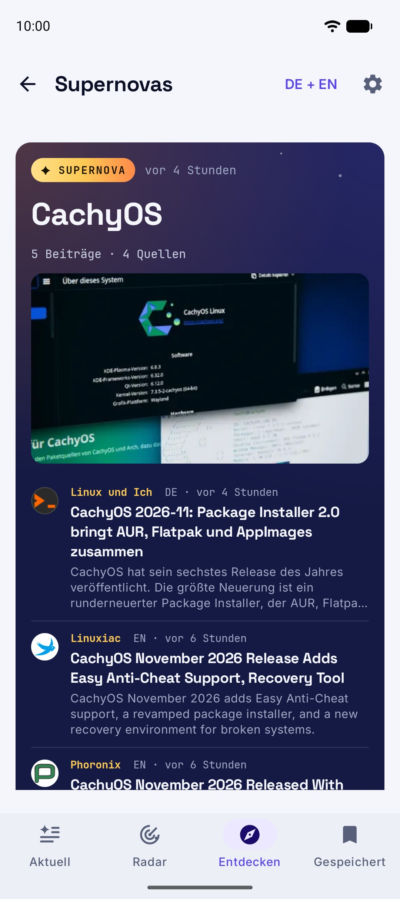
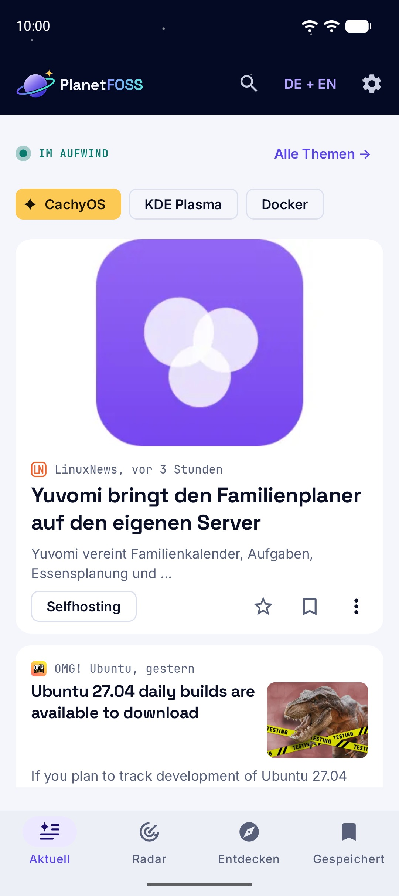
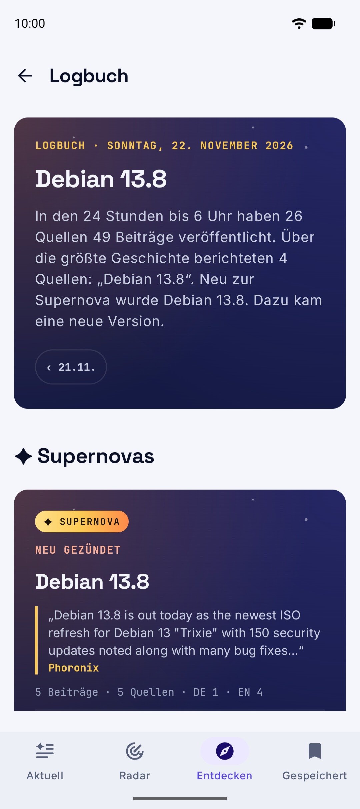
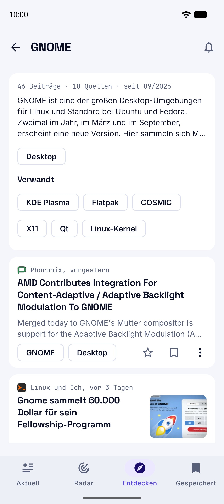
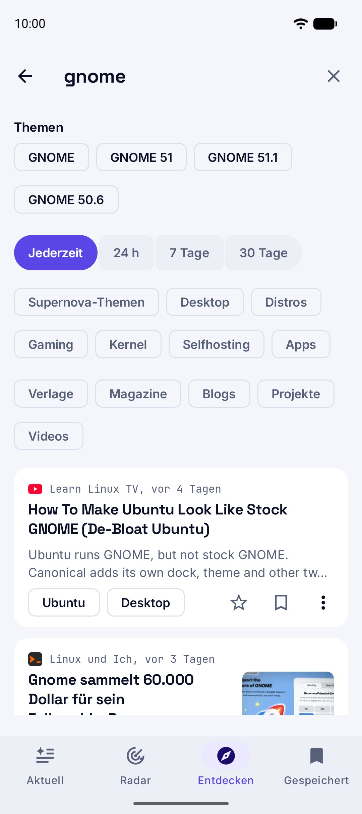
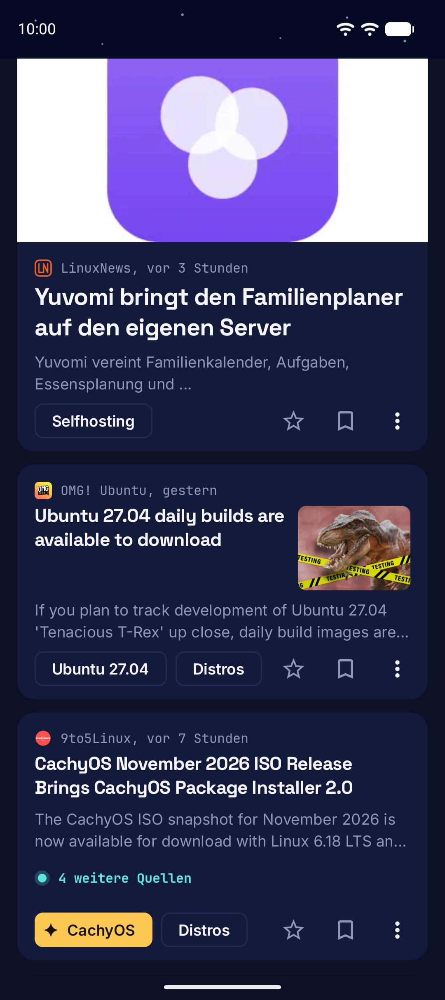

Planet
FOSS
Supernovas
Was die Linux-Welt
gerade bewegt

Aktuell
Über 200 Quellen in
einem Strom

Logbuch · 6 Uhr
Jeden Morgen
dein Logbuch

Themen
Ein Thema,
alle Quellen

Open Source · GPL
Freie Software,
hell oder dunkel

